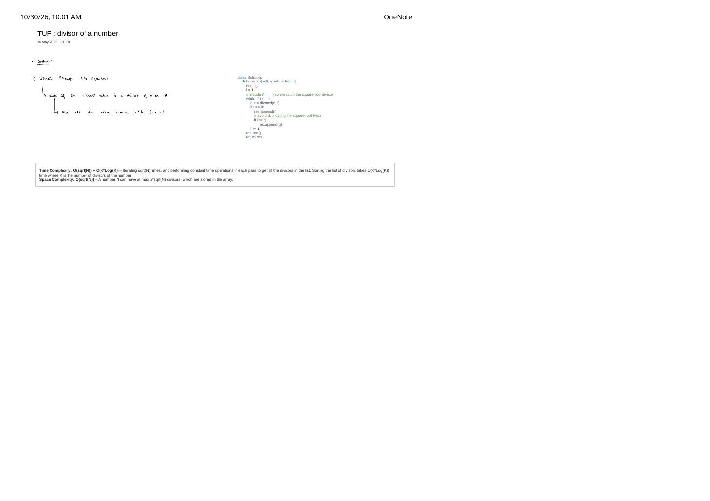

All Divisors of a Number: $\mathcal{O}(\sqrt{N})$ Factor-Pair Collection & Sort-Free Two-Bucket Trick
Expanded from handwritten competitive coding study note: 05_TUF_divisor_of_a_number.pdf
1. Problem Statement & Goal
Given a positive integer $n \ge 1$, return all positive divisors of $n$ in ascending sorted order.
- Non-square example ($n = 28$):
[1, 2, 4, 7, 14, 28](6 divisors — even count!). - Perfect-square example ($n = 36$):
[1, 2, 3, 4, 6, 9, 12, 18, 36](9 divisors — odd count because $6$ pairs with itself!).
2. Brute $\to$ Handwritten $\mathcal{O}(\sqrt{N} + K \log K)$ $\to$ Sort-Free $\mathcal{O}(\sqrt{N})$
- Brute Force ($\mathcal{O}(n)$ Time): Iterate $i = 1 \dots n$ and append $i$ whenever
n % i == 0. Naturally sorted, but performs $10^{12}$ divisions when $n = 10^{12}$. - Handwritten Optimal Approach in
05_TUF_divisor_of_a_number.pdf($\mathcal{O}(\sqrt{N} + K \log K)$):- Iterate $i$ from $1$ while
i * i <= n(inclusive<=catches $\sqrt{n}$ when $n$ is a perfect square). - Compute quotient and remainder simultaneously (
q, r = divmod(n, i)in Python). - Whenever
r == 0, $i$ is a lower divisor and $q = n / i$ is its upper partner ($i \cdot q = n$): appendi, and ifi != q, also appendq! - Because pairs arrive interleaved like
[1, 36, 2, 18, 3, 12, 4, 9, 6], finish withres.sort()in $\mathcal{O}(K \log K)$ where $K = d(n)$ is the divisor count.
- Iterate $i$ from $1$ while
- Sort-Free Two-Bucket Upgrade (Pure $\mathcal{O}(\sqrt{N})$ Time!): Notice that as $i$ strictly increases ($1, 2, 3, 4, 6$), its partner $q = n / i$ strictly decreases ($36, 18, 12, 9$)! Appending $i$ to
smalland $q$ ($q \neq i$) tolarge, then concatenatingsmall + reversed(large)produces sorted order in $\mathcal{O}(K) \subseteq \mathcal{O}(\sqrt{N})$ with zero comparison sorting!
if i != q: check, $6$ would be pushed twice!3. Handwritten Python & Clean C++ Implementations
# Exact Python implementation from 05_TUF_divisor_of_a_number.pdf (O(sqrt(N) + K log K))
class Solution:
def divisors(self, n: int) -> list[int]:
res = []
i = 1
# Include i * i == n so we catch the square-root divisor
while i * i <= n:
q, r = divmod(n, i)
if r == 0:
res.append(i)
# Avoid duplicating the square-root twice
if i != q:
res.append(q)
i += 1
res.sort()
return res
# Sort-free two-bucket variant: Pure O(sqrt(N)) Time!
def divisors_no_sort(self, n: int) -> list[int]:
small, large = [], []
i = 1
while i * i <= n:
q, r = divmod(n, i)
if r == 0:
small.append(i)
if i != q:
large.append(q)
i += 1
large.reverse()
return small + large// All Divisors of a Number in C++ — Pure O(sqrt(N)) Two-Bucket Version & Sort Version
#include <algorithm>
#include <vector>
using namespace std;
class Solution {
public:
// Pure O(sqrt(N)) without comparison sort
vector<long long> divisors(long long n) {
vector<long long> small, large;
for (long long i = 1; i * i <= n; ++i) {
if (n % i == 0) {
small.push_back(i);
long long q = n / i;
if (i != q) {
large.push_back(q);
}
}
}
small.insert(small.end(), large.rbegin(), large.rend());
return small;
}
};4. Unpacking the Complexity Box & Contest Divisor Bounds
Why $K = d(N)$ Is Tiny Even for Giant $N$
- Handwritten Complexity Box: Iterating $1 \dots \lfloor \sqrt{N} \rfloor$ takes $\mathcal{O}(\sqrt{N})$ time; sorting the $K$ discovered divisors takes $\mathcal{O}(K \log K)$ time, giving $\mathcal{O}(\sqrt{N}) + \mathcal{O}(K \log K)$ total time (or pure $\mathcal{O}(\sqrt{N})$ with two buckets).
- Space Complexity — $\mathcal{O}(K) \subseteq \mathcal{O}(\sqrt{N})$: Because every $i \le \sqrt{N}$ contributes at most $2$ divisors $(i, N/i)$, we always have $K \le 2\sqrt{N}$. In fact, asymptotically $d(N) = N^{o(1)}$ (specifically $\max d(N) = 1{,}344$ for $N \le 10^9$, and $\max d(N) = 103{,}680$ for $N \le 10^{18}$—a handy rule of thumb is $d(N) \lesssim \sqrt[3]{N}$ in contest sizing!).
- Key Edge Cases:
- $n = 1$: $i = 1, q = 1$: pushes
1, skipsqsincei == q$\implies$[1]. - Prime $n$ (e.g. $n = 13$): Only $i = 1$ divides $13$ $\implies$
[1, 13]. - Perfect squares ($n = 4, 9, 36, 10^{12}$): Both
i * i <= nandi != qwork in tandem—the first ensures $\sqrt{n}$ is included; the second ensures $\sqrt{n}$ is included only once!
- $n = 1$: $i = 1, q = 1$: pushes
From the Handwritten Notes
View original handwritten page — 05_TUF_divisor_of_a_number.pdf (divmod loop, i != q guard & O(√N + K log K) analysis)


05_TUF_divisor_of_a_number.pdf: Iterating $1 \dots \sqrt{n}$, adding complementary factor $b = n / a$ when $i \neq q$, and proving $\mathcal{O}(\sqrt{N}) + \mathcal{O}(K \log K)$ time and $\mathcal{O}(\sqrt{N})$ space.